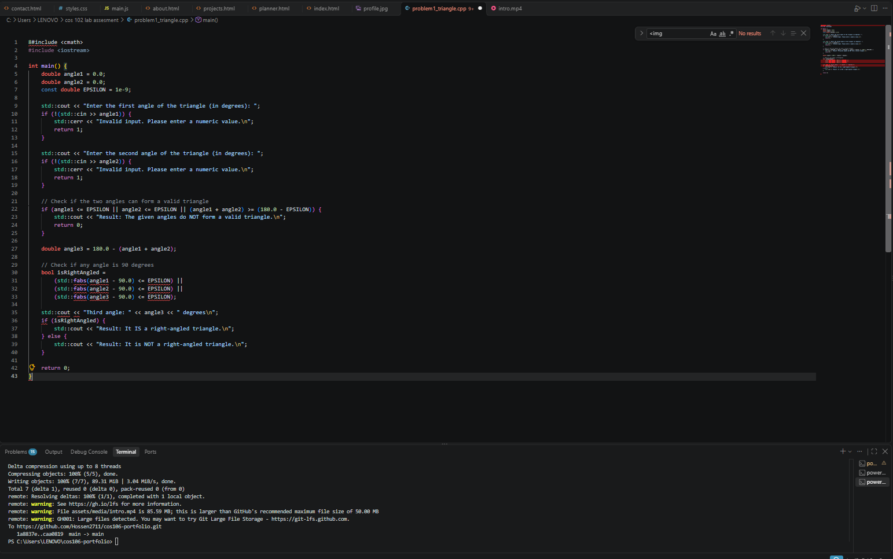
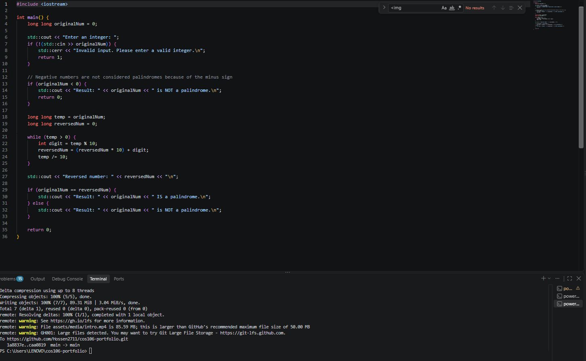

1. Triangle Classification Tool
A C++ program developed for COS 102 that accepts three side lengths, validates the triangle inequality theorem, and classifies triangles as equilateral, isosceles, or scalene.
View Source CodeBelow are three practical academic and personal projects demonstrating structured logic, version control, and responsive web design.

A C++ program developed for COS 102 that accepts three side lengths, validates the triangle inequality theorem, and classifies triangles as equilateral, isosceles, or scalene.
View Source Code
A C++ console application that checks words and numeric strings to verify whether they read identically forward and backward using clean string traversal functions.
View Source Code
A five-page responsive website built with semantic HTML5, CSS Grid/Flexbox, and vanilla JavaScript featuring task management and live form validation.
Launch Live Demo